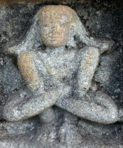
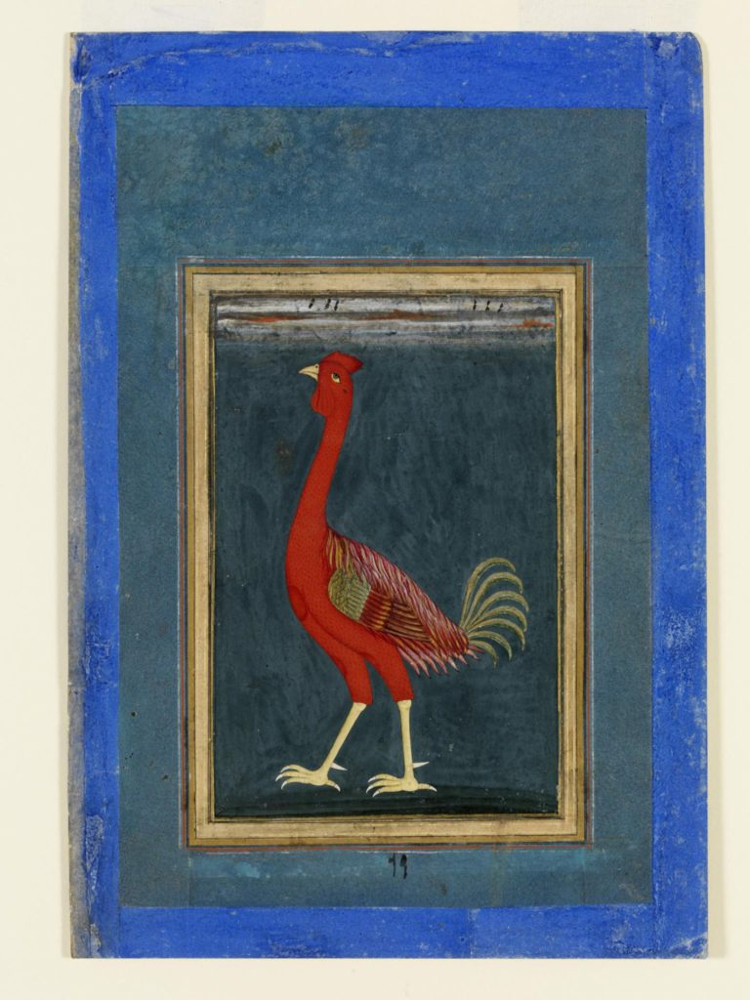

<!DOCTYPE html>
<html lang="en">
<head>
<meta charset="utf-8">
<meta name="viewport" content="width=device-width, initial-scale=1.0">
<title>The Purpose of Kukkuṭāsana: Notes from a Workshop - Hatha Yoga Project — The Haṭha Yoga Project</title>
<link rel="stylesheet" href="../../assets/site.css">
<link rel="stylesheet" href="../../assets/hyp.css">
</head>
<body class="site-hyp">
<header class="site-header"><div class="site-header-inner">
  <a class="site-title" href="../../hyp/">The Haṭha Yoga Project</a>
  <nav class="site-nav">
      <a href="../../hyp/">Home</a>
      <a href="../../hyp/team/">Team</a>
      <a href="../../hyp/publications/">Publications</a>
      <a href="../../hyp/roots-of-yoga/">Roots of Yoga</a>
      <a href="../../hyp/resources/">Resources</a>
      <a href="../../hyp/libraries/">Libraries</a>
      <a href="../../hyp/events/">Events</a>
      <a href="../../hyp/blog/">Blog</a>
      <a href="../../hyp/gallery/">Gallery</a>
  </nav>
</div></header>

<main class="site-main narrow">
<h1>The Purpose of Kukkuṭāsana: Notes from a Workshop</h1>
<p>The second workshop of the Haṭha Yoga Project was held at a cottage on the Isle of Wight in September 2017. The focus of the workshop was reading the section on <em>āsana</em> in a manuscript of the <em>Yogacintāmaṇi</em> held at the Scindia Oriental Research Institute, Ujjain, India. This manuscript contains descriptions of seventeen <em>āsana</em>s, as well as two long lists of <em>āsana</em>s, that are not found in other works. Mark Singleton and I are preparing a critical edition of this passage, which is based on nearly a dozen manuscripts of the <em>Yogacintāmaṇi</em>, a manuscript of Godāvaramiśra’s <em>Yogacintāmaṇi</em> and many testimonia.</p>
<p>I presented our work on the <em>Yogacintāmaṇi</em> to Dr James Mallinson and two special guests: Dr Somdev Vasudeva, who in turn presented his critical edition of the chapter on <em>āsana</em> in the <em>Jayadrathayāmala</em>, and Dr Csaba Kiss, who presented his critical edition of the chapter on <em>āsana</em> in the <em>Matysendrasaṃhitā</em>.</p>
<p>The Ujjain manuscript of the <em>Yogacintāmaṇi</em> contains many interesting marginal notes in its section on <em>āsana</em>, one of which I have written about <a href="http://theluminescent.blogspot.jp/2017/08/how-to-succeed-at-asana-seventeenth.html">here</a>. The <em>Yogacintāmaṇi</em>‘s description of <em>kukkuṭāsana</em> is the standard one found in the <em>Vasiṣṭhasaṃhitā</em> (1.78) and the <em>Haṭhapradīpikā</em> (1.25):</p>
<p>Having adopted lotus posture (<em>padmāsana</em>), [the yogin should] insert the hands between the knees and thighs, place them on the ground and remain in the air. [This is] the cock pose (<em>kukkuṭāsana</em>).<sup>1</sup></p>
<p>Above this description, the Ujjain manuscript has the following note in its upper margin:</p>
<p><em>Kukkuṭāsana</em> is effective for cleansing the channels (<em>nāḍī</em>).<sup>2</sup></p>
<p> Ascetic in Kukkuṭāsana<br/>Location: Vidyāśaṅkara Temple in the Śṛṅgerī Maṭha, Karṇataka<br/> Photo credit: Jason Birch</p>
<p>The unknown author of this note, who must have lived in the second half of the seventeenth century, believed that the practice of <em>kukkuṭāsana</em> could cleanse the <em>nāḍī</em>s, which are the channels in the body that convey vitality (<em>prāṇa</em>). Some texts, such as the <em>Vasiṣṭhasaṃhitā</em> (2.55-69, also see <em>Haṭhapradīpikā</em> 2.4-5), consider clean <em>nāḍī</em>s to be a requisite for <em>prāṇāyāma</em> while others, such as the <em>Dattātreyayogaśāstra</em> (67, also see <em>Haṭhapradīpikā</em> 2.78), consider it a result of <em>prāṇāyāma</em>.</p>
<p>It is not unheard of that an <em>āsana</em> can cleanse the <em>nāḍī</em>s. In fact, the <em>Haṭhapradīpikā</em> includes a verse claiming that of the eighty-four seated <em>āsana</em>s (<em>pīṭha</em>), a yogin should always practise <em>siddhāsana</em> because it removes impurities from the seventy-two thousand <em>nāḍī</em>s in the body.<sup>3</sup></p>
<p>There is a similar comment in Sundaradeva’s <em>Haṭhasaṅketacandrikā</em> to the above marginal note on <em>kukkuṭāsana.</em> This suggests that the author of the marginal notes in the Ujjain manuscript may have known the <em>Haṭhasaṅketacandrikā</em>. If this was so, the <em>Haṭhasaṅketacandrikā</em> must have been composed before 1659 CE.<sup>4</sup> However, it is also possible that both authors were drawing material from a third unknown source, which is somewhat likely in the case of the <em>Haṭhasaṅketacandrikā</em> because it is a compendium.</p>
<p>The <em>Haṭhasaṅketacandrikā</em> categorises two <em>āsana</em>s as being effective for cleansing the <em>nāḍī</em>s.<sup>5</sup> These are <em>kukkuṭāsana</em> and <em>dhanurāsana</em>. The <em>Haṭhapradīpikā</em> (1.25 and 1.27) describes both of these <em>āsana</em>s but it does not mention that they cleanse the <em>nāḍī</em>s.</p>
<p>So, one might wonder whether <em>kukkuṭāsana</em>‘s effect of cleansing the <em>nāḍī</em>s was noticed sometime between the composition of the <em>Haṭhapradīpikā</em> (mid-fifteenth century) and the <em>Haṭhasaṅketacandrikā</em> (mid-seventeenth century).</p>
<p>And is there something significant about the fact that <em>siddhāsana</em>, one of the foremost <em>āsana</em>s in the <em>Haṭhapradīpikā</em>, was thought to cleanse the <em>nāḍī</em>s in the fifteenth century, whereas two non-seated poses are attributed with this effect in the seventeenth century? Might this point to the growing importance of non-seated postures and their health benefits after the <em>Haṭhapradīpikā</em> was composed? Or did Sundaradeva, who was a physician (<em>vaidya</em>) in Varanasi, make a greater effort than previous authors to document the healing benefits of non-seated poses?</p>
<p> Place of origin: Deccan, ca. 1610 – ca. 1620.<br/>Artist/Maker: Unknown.<br/>Materials: Painted in opaque watercolour on paper, gold on borders.<br/> Collection: Victoria &amp; Albert Museum (IS.92-1965)</p>
<hr/>
<h4><strong>Notes</strong></h4>
<p>1.<em>Vasiṣṭhasaṃhitā</em> 1.78 (<em>padmāsanaṃ samāsthāya jānūrvor antare karau</em> | <em>bhūmau niveśya saṃsthāpya vyomasthaḥ kukkuṭāsanam</em> || <em>vyomasthaḥ</em> ] emend. (mss. la, va and śa) : <em>vyomasthaṃ</em> Ed.). Cf. <em>Haṭhapradīpikā</em> 1.25 (<em>padmāsanaṃ tu saṃsthāpya jānūrvor antare karau</em> | <em>niveśya bhūmau saṃsthāpya vyomasthaṃ kukkuṭāsanam</em> || In the critical edition, manuscripts ka, gha, pa and pha have <em>vyomasthaḥ</em>). On the identity of <em>kukkuṭa</em> as the Red Junglefowl (<em>gallus gallus</em>), see K. N. Dave, <em>Birds in Sanskrit Literature: With 107 Bird Illustrations</em>, Motilal Banarsidass, 2005, pp. 138 and 489.<br/>
2. <em>Yogacintāmaṇi, </em>Ms. No. 3537,<em> </em> 60r (top margin): <em>kukkuṭaṃ nāḍīśuddhyupayogi</em><br/>
3. <em>Haṭhapradīpikā</em> 1.41 (<em>caturaśītipīṭheṣu siddham eva sadābhyaset</em> | <em>dvāsaptatisahasrāṇāṃ nāḍīnāṃ malaśodhanam</em>).<br/>
4. The <em>Haṭhasaṅketacandrikā</em> post-dates the <em>Yogacintāmaṇi</em> (early 17th century), because the former cites the latter by name.<br/>
5. <em>Haṭhasaṅketacandrikā</em>, Ms. No. 2244 [Man Singh Pustak Prakash, Jodhpur], f. 28r; “Among the <em>āsana</em>s, two are effective for cleansing the channels” (<em>athāsaneṣu nāḍīśuddhyupayogy āsanadvayam</em>).</p>
</main>

<footer class="site-footer"><div class="site-footer-inner">
  <span>The Haṭha Yoga Project · SOAS University of London</span><span><a href="../../hp/">Haṭhapradīpikā Online →</a></span>
</div></footer>
</body>
</html>
